Held-out observed pairs. Supportive/counterexamples are extremes in the frozen direction, one per distinct prompt; random audit uses a seeded hash ordering. Examples are illustrative, not typicality or causal evidence. The CSV is a blank human annotation template.
lip-syncing (preferred direction frozen on discovery) supportive a realistic detailed cinematic painting of a beautiful clear glass vibrant consciousness of human evolution, strange miraculous entity reflecting light prism, spiritual enlightenment, manifestation, peace, reincarnation, memories of past lives, triumph, beauty, perfection, opal statues adorned in jewels, by david a. hardy, kinkade, lisa frank, wpa, public works mural, socialist
preferred: 0.3191 rejected: 0.2174
Preferred − rejected: +0.1017; event imagereward:test:010264-0028. Unverified.
supportive a portrait of a red - skinned dragonborn monk in a plain white cloak white cloak, holding a spear with a black tip, fantasy art by greg rutkowski
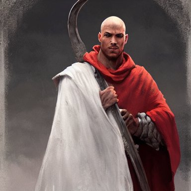
preferred: 0.3020 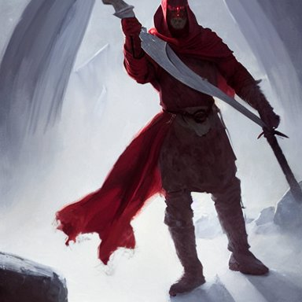
rejected: 0.2247 Preferred − rejected: +0.0773; event imagereward:test:008328-0024. Unverified.
counterexample scene from a 2 0 1 0 film by artemisia gentileschi showing a woman
preferred: 0.2906 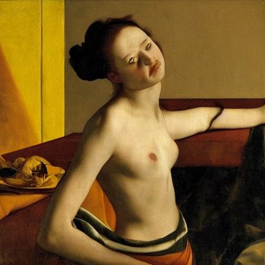
rejected: 0.3397 Preferred − rejected: -0.0491; event imagereward:test:007592-0020. Unverified.
counterexample a character sheet showing 4 different designs for an evil sorcerer in ornamental robes with glowing runes on fabric, holding a tall glowing ornate intricate magical staff, video game concept art by greg rutkowski, craig mullins, weta, elder scrolls
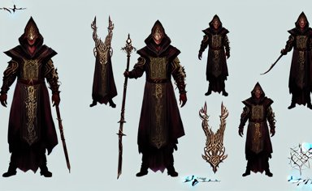
preferred: 0.2428 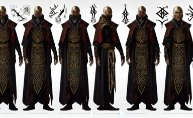
rejected: 0.2915 Preferred − rejected: -0.0487; event imagereward:test:008294-0028. Unverified.
random_audit raytraced render and digital painting of the inconceivable and spectacular a scene of complete madness, by greg rutkowski and michelangelo buonarroti and kinkade, cosmic entities, celestial, cosmic, luxury, elegant, ornate, vibrant and vivid, smooth, soft billowing smoke, darkness, bright, heavenly, elegant, swirls, cosmic flower, nebula vines, nebula tree, twirling, billowing, cinematic, unrealistic, high contrast, hdr, 4 k, artstation, cgsociety, unreal engine, symobolism, magical, mystical, mystifying, obscure, perplexing, zbrush, octane, hyperrealistic, bokeh, dof
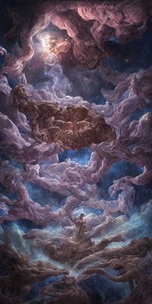
preferred: 0.1820 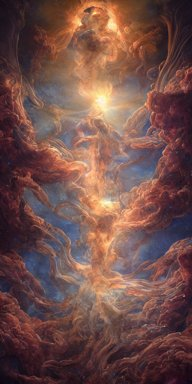
rejected: 0.1812 Preferred − rejected: +0.0008; event imagereward:test:008151-0078. Unverified.
random_audit rainy dystopian city from the year 3000, futuristic, neon lights, cyberpunk, atmospheric, detailed, unreal engine, octane render,
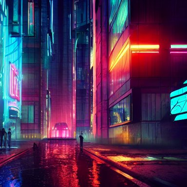
preferred: 0.2120 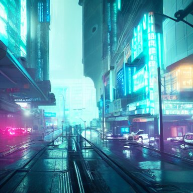
rejected: 0.2333 Preferred − rejected: -0.0214; event imagereward:test:001221-0062. Unverified.
lip-smacking (preferred direction frozen on discovery) supportive photo of a guy playing a gameboy under the blanket in his bed at night
preferred: 0.3324 rejected: 0.2230 Preferred − rejected: +0.1094; event imagereward:test:001242-0093. Unverified.
supportive a realistic detailed cinematic painting of a beautiful clear glass vibrant consciousness of human evolution, strange miraculous entity reflecting light prism, spiritual enlightenment, manifestation, peace, reincarnation, memories of past lives, triumph, beauty, perfection, opal statues adorned in jewels, by david a. hardy, kinkade, lisa frank, wpa, public works mural, socialist
preferred: 0.3228 rejected: 0.2333
Preferred − rejected: +0.0895; event imagereward:test:010264-0028. Unverified.
counterexample footage of an astronaut in a tropical beach
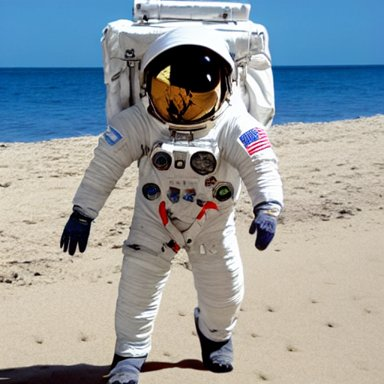
preferred: 0.1985 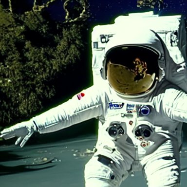
rejected: 0.2726 Preferred − rejected: -0.0741; event imagereward:test:001227-0027. Unverified.
counterexample a character sheet showing 4 different designs for an evil sorcerer in ornamental robes with glowing runes on fabric, holding a tall glowing ornate intricate magical staff, video game concept art by greg rutkowski, craig mullins, weta, elder scrolls
preferred: 0.2480 rejected: 0.3090
Preferred − rejected: -0.0611; event imagereward:test:008294-0028. Unverified.
random_audit if woody and buzz from toy story had a kid pixar animation hd
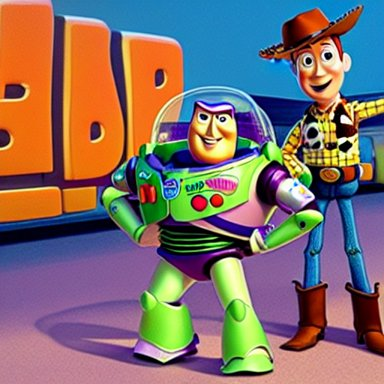
preferred: 0.2979 rejected: 0.3294 Preferred − rejected: -0.0316; event imagereward:test:001151-0006. Unverified.
random_audit muscular man wearing a leather harness and hat
preferred: 0.3351 rejected: 0.3441 Preferred − rejected: -0.0090; event imagereward:test:007189-0066. Unverified.
stare (preferred direction frozen on discovery) supportive film still from frightening horror movie. cinematic. 8 k.
preferred: 0.3105 rejected: 0.2285 Preferred − rejected: +0.0820; event imagereward:test:009475-0037. Unverified.
supportive photo of a guy playing a gameboy under the blanket in his bed at night
preferred: 0.3122 rejected: 0.2511 Preferred − rejected: +0.0612; event imagereward:test:001242-0093. Unverified.
counterexample a half - masked rugged laboratory engineer man with cybernetic enhancements as seen from a distance, scifi character portrait by greg rutkowski, esuthio, craig mullins, 1 / 4 headshot, cinematic lighting, dystopian scifi gear, gloomy, profile picture, mechanical, half robot, implants, dieselpunk
preferred: 0.2398 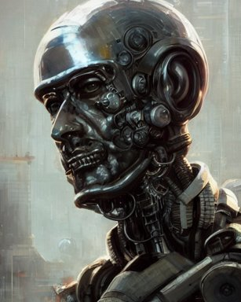
rejected: 0.3034 Preferred − rejected: -0.0635; event imagereward:test:001383-0079. Unverified.
counterexample highly detailed painting of uzumaki naruto fighting a looming demigod, dramatic, sense of scale, stephen bliss, unreal engine, greg rutkowski, ilya kuvshinov, ross draws, hyung tae and frank frazetta, tom bagshaw, tom whalen, nicoletta ceccoli, mark ryden, earl norem, global illumination, god rays, windswept
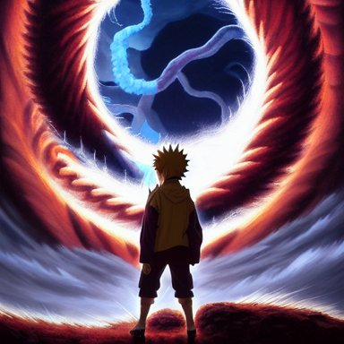
preferred: 0.2452 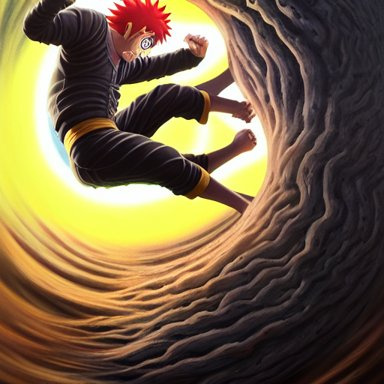
rejected: 0.2809 Preferred − rejected: -0.0357; event imagereward:test:001382-0041. Unverified.
random_audit a portrait of a red - skinned dragonborn monk in a plain white cloak white cloak, holding a spear with a black tip, fantasy art by greg rutkowski
preferred: 0.3364 rejected: 0.2868
Preferred − rejected: +0.0496; event imagereward:test:008328-0024. Unverified.
random_audit if woody and buzz from toy story had a kid pixar animation hd
preferred: 0.2995 rejected: 0.3060 Preferred − rejected: -0.0065; event imagereward:test:001151-0006. Unverified.
smirk (preferred direction frozen on discovery) supportive film still from frightening horror movie. cinematic. 8 k.
preferred: 0.2882 rejected: 0.1935 Preferred − rejected: +0.0946; event imagereward:test:009475-0037. Unverified.
supportive a portrait of a red - skinned dragonborn monk in a plain white cloak white cloak, holding a spear with a black tip, fantasy art by greg rutkowski
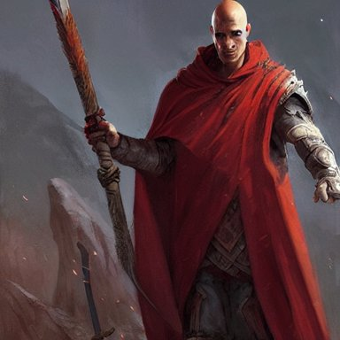
preferred: 0.3402 rejected: 0.2771 Preferred − rejected: +0.0631; event imagereward:test:008328-0024. Unverified.
counterexample footage of an astronaut in a tropical beach
preferred: 0.2474 rejected: 0.3085
Preferred − rejected: -0.0611; event imagereward:test:001227-0027. Unverified.
counterexample a half - masked rugged laboratory engineer man with cybernetic enhancements as seen from a distance, scifi character portrait by greg rutkowski, esuthio, craig mullins, 1 / 4 headshot, cinematic lighting, dystopian scifi gear, gloomy, profile picture, mechanical, half robot, implants, dieselpunk
preferred: 0.2521 rejected: 0.3115 Preferred − rejected: -0.0594; event imagereward:test:001383-0079. Unverified.
random_audit wall with famous banksy graffiti
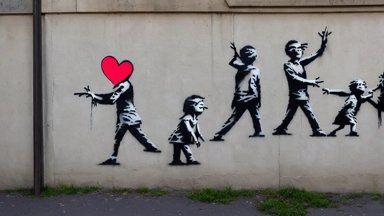
preferred: 0.2872 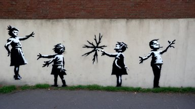
rejected: 0.2661 Preferred − rejected: +0.0211; event imagereward:test:010987-0077. Unverified.
random_audit realistic photography of a man 3 5 years old with a bit of bear, short hair, few wrinkles around eyes, sexy, cinematographic, cinematic light, close up view, intense, colorize, 8 0 mm lens
preferred: 0.3314 rejected: 0.3144 Preferred − rejected: +0.0170; event imagereward:test:001260-0073. Unverified.
wide-eyed (preferred direction frozen on discovery) supportive film still from frightening horror movie. cinematic. 8 k.
preferred: 0.3349 rejected: 0.2123 Preferred − rejected: +0.1226; event imagereward:test:009475-0037. Unverified.
supportive funny peanut butter
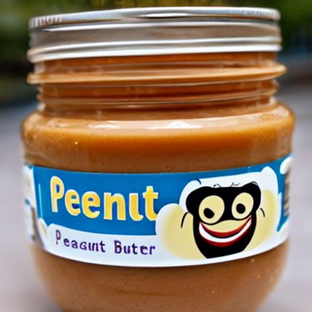
preferred: 0.3422 rejected: 0.2212 Preferred − rejected: +0.1210; event imagereward:test:010856-0009. Unverified.
counterexample a half - masked rugged laboratory engineer man with cybernetic enhancements as seen from a distance, scifi character portrait by greg rutkowski, esuthio, craig mullins, 1 / 4 headshot, cinematic lighting, dystopian scifi gear, gloomy, profile picture, mechanical, half robot, implants, dieselpunk
preferred: 0.2263 rejected: 0.3018 Preferred − rejected: -0.0755; event imagereward:test:001383-0079. Unverified.
counterexample !13 hungry cannibals making a rich salad around a marble table, !positioned as last supper cinematic lighting, dramatic framing, highly detalied, 4k, artstation, by Rene Lalique and Wayne Barlowe
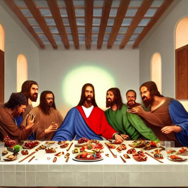
preferred: 0.2203 rejected: 0.2838 Preferred − rejected: -0.0635; event imagereward:test:007135-0060. Unverified.
random_audit Horrifying creature, haunted, horror
preferred: 0.3256 rejected: 0.3144 Preferred − rejected: +0.0113; event imagereward:test:009006-0102. Unverified.
random_audit beautiful nighttime landscape photography of the Rocky Mountains with a crystal blue lake, milky way galaxy sky, serene, dramatic lighting.
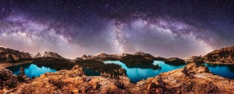
preferred: 0.1988 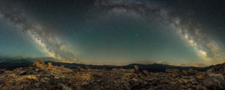
rejected: 0.2132 Preferred − rejected: -0.0143; event imagereward:test:010446-0019. Unverified.
eyebrow-raising (preferred direction frozen on discovery) supportive photo of a guy playing a gameboy under the blanket in his bed at night
preferred: 0.2842 rejected: 0.2023 Preferred − rejected: +0.0819; event imagereward:test:001242-0093. Unverified.
supportive film still from frightening horror movie. cinematic. 8 k.
preferred: 0.2842 rejected: 0.2100 Preferred − rejected: +0.0741; event imagereward:test:009475-0037. Unverified.
counterexample a half - masked rugged laboratory engineer man with cybernetic enhancements as seen from a distance, scifi character portrait by greg rutkowski, esuthio, craig mullins, 1 / 4 headshot, cinematic lighting, dystopian scifi gear, gloomy, profile picture, mechanical, half robot, implants, dieselpunk
preferred: 0.2328 rejected: 0.2963 Preferred − rejected: -0.0635; event imagereward:test:001383-0079. Unverified.
counterexample photoreal portrait very intricate! synthwave dj wearing a black hoody, white glossy class - a surfaces, glittering light leaks, electromagnetic waves, blue glowing aggressive led eyes, zbrush, greeble skin, octane render, colani design, cyberpunk, dystopia tokyo
preferred: 0.2531 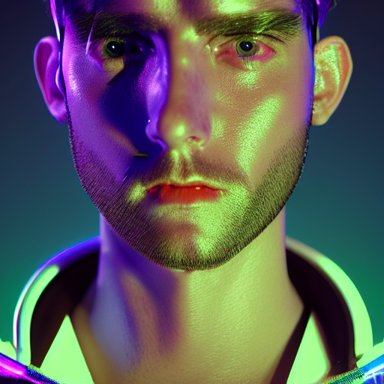
rejected: 0.3154 Preferred − rejected: -0.0622; event imagereward:test:007759-0110. Unverified.
random_audit A majestic landscape featuring a river, mountains and a forest. A small group of birds is flying in the sky. Harsh winter. very windy. There is a man walking in a deep snow. Cinematic, very beautiful, painting in the style of Lord of the rings
preferred: 0.1775 rejected: 0.1644 Preferred − rejected: +0.0131; event imagereward:test:007135-0056. Unverified.
random_audit A realistic photo of a man with big ears
preferred: 0.3101 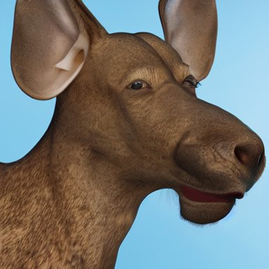
rejected: 0.2855 Preferred − rejected: +0.0246; event imagereward:test:001205-0101. Unverified.
big-eyed (preferred direction frozen on discovery) supportive film still from frightening horror movie. cinematic. 8 k.
preferred: 0.3063 rejected: 0.1747 Preferred − rejected: +0.1316; event imagereward:test:009475-0037. Unverified.
supportive funny peanut butter
preferred: 0.3303 rejected: 0.2177 Preferred − rejected: +0.1126; event imagereward:test:010856-0009. Unverified.
counterexample !13 hungry cannibals making a rich salad around a marble table, !positioned as last supper cinematic lighting, dramatic framing, highly detalied, 4k, artstation, by Rene Lalique and Wayne Barlowe
preferred: 0.2073 rejected: 0.2807 Preferred − rejected: -0.0734; event imagereward:test:007135-0060. Unverified.
counterexample raytraced render and digital painting of the inconceivable and spectacular a scene of complete madness, by greg rutkowski and michelangelo buonarroti and kinkade, cosmic entities, celestial, cosmic, luxury, elegant, ornate, vibrant and vivid, smooth, soft billowing smoke, darkness, bright, heavenly, elegant, swirls, cosmic flower, nebula vines, nebula tree, twirling, billowing, cinematic, unrealistic, high contrast, hdr, 4 k, artstation, cgsociety, unreal engine, symobolism, magical, mystical, mystifying, obscure, perplexing, zbrush, octane, hyperrealistic, bokeh, dof
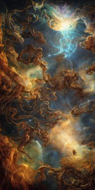
preferred: 0.2151 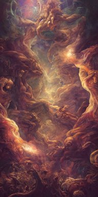
rejected: 0.2729 Preferred − rejected: -0.0578; event imagereward:test:008151-0078. Unverified.
random_audit the pope in saving private james ryan
preferred: 0.2920 rejected: 0.2402 Preferred − rejected: +0.0518; event imagereward:test:010918-0030. Unverified.
random_audit wall with famous banksy graffiti
preferred: 0.2274 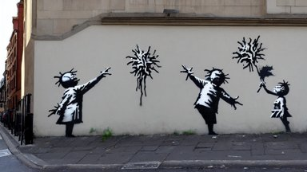
rejected: 0.2543 Preferred − rejected: -0.0269; event imagereward:test:010987-0077. Unverified.
physiognomy (preferred direction frozen on discovery) supportive a portrait of a red - skinned dragonborn monk in a plain white cloak white cloak, holding a spear with a black tip, fantasy art by greg rutkowski
preferred: 0.3344 rejected: 0.2340
Preferred − rejected: +0.1003; event imagereward:test:008328-0024. Unverified.
supportive film still from frightening horror movie. cinematic. 8 k.
preferred: 0.3076 rejected: 0.2078 Preferred − rejected: +0.0998; event imagereward:test:009475-0037. Unverified.
counterexample highly detailed painting of uzumaki naruto fighting a looming demigod, dramatic, sense of scale, stephen bliss, unreal engine, greg rutkowski, ilya kuvshinov, ross draws, hyung tae and frank frazetta, tom bagshaw, tom whalen, nicoletta ceccoli, mark ryden, earl norem, global illumination, god rays, windswept
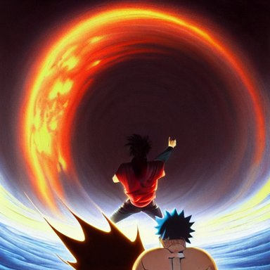
preferred: 0.1931 rejected: 0.2544 Preferred − rejected: -0.0613; event imagereward:test:001382-0041. Unverified.
counterexample footage of an astronaut in a tropical beach
preferred: 0.2049 rejected: 0.2539
Preferred − rejected: -0.0490; event imagereward:test:001227-0027. Unverified.
random_audit a cat combined with a chinchilla
preferred: 0.3192 rejected: 0.3068 Preferred − rejected: +0.0124; event imagereward:test:001192-0041. Unverified.
random_audit Boris Johnson and Eminen on a stage having an epic rap battle together
preferred: 0.3139 rejected: 0.2957 Preferred − rejected: +0.0182; event imagereward:test:007713-0046. Unverified.
serious-looking (preferred direction frozen on discovery) supportive photo of a guy playing a gameboy under the blanket in his bed at night
preferred: 0.3160 rejected: 0.2383 Preferred − rejected: +0.0777; event imagereward:test:001242-0093. Unverified.
supportive film still from frightening horror movie. cinematic. 8 k.
preferred: 0.2954 rejected: 0.2294 Preferred − rejected: +0.0660; event imagereward:test:009475-0037. Unverified.
counterexample A majestic landscape featuring a river, mountains and a forest. A small group of birds is flying in the sky. Harsh winter. very windy. There is a man walking in a deep snow. Cinematic, very beautiful, painting in the style of Lord of the rings
preferred: 0.2543 rejected: 0.2904 Preferred − rejected: -0.0361; event imagereward:test:007135-0056. Unverified.
counterexample highly detailed painting of uzumaki naruto fighting a looming demigod, dramatic, sense of scale, stephen bliss, unreal engine, greg rutkowski, ilya kuvshinov, ross draws, hyung tae and frank frazetta, tom bagshaw, tom whalen, nicoletta ceccoli, mark ryden, earl norem, global illumination, god rays, windswept
preferred: 0.2654 rejected: 0.2991
Preferred − rejected: -0.0337; event imagereward:test:001382-0041. Unverified.
random_audit Twin Peaks book cover movie poster artwork by Tomer Hanuka, Rendering a blue rose full of details, Michael Whelan, Patryk Hardziej, Makoto Shinkai and thomas kinkade, by Gregory Crewdson, Matte painting, trending on artstation and unreal engine
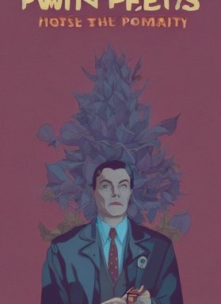
preferred: 0.3087 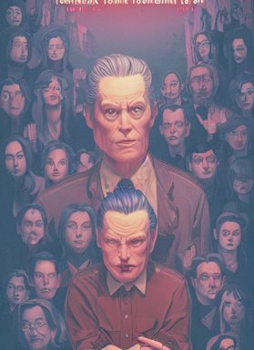
rejected: 0.3115 Preferred − rejected: -0.0027; event imagereward:test:005875-0035. Unverified.
random_audit a realistic detailed cinematic painting of a beautiful clear glass vibrant consciousness of human evolution, strange miraculous entity reflecting light prism, spiritual enlightenment, manifestation, peace, reincarnation, memories of past lives, triumph, beauty, perfection, opal statues adorned in jewels, by david a. hardy, kinkade, lisa frank, wpa, public works mural, socialist
preferred: 0.2995 rejected: 0.2842
Preferred − rejected: +0.0153; event imagereward:test:010264-0028. Unverified.
staring (preferred direction frozen on discovery) supportive film still from frightening horror movie. cinematic. 8 k.
preferred: 0.3154 rejected: 0.2281 Preferred − rejected: +0.0873; event imagereward:test:009475-0037. Unverified.
supportive bioluminescent crystal ball abstract sculpture, neon, fluorescent, magenta hyper detailed, red & purple beauteous biomechanical organic lightpainting, 8 k scenery, perfect lighting balance,
preferred: 0.2756 rejected: 0.2235 Preferred − rejected: +0.0522; event imagereward:test:008275-0162. Unverified.
counterexample a half - masked rugged laboratory engineer man with cybernetic enhancements as seen from a distance, scifi character portrait by greg rutkowski, esuthio, craig mullins, 1 / 4 headshot, cinematic lighting, dystopian scifi gear, gloomy, profile picture, mechanical, half robot, implants, dieselpunk
preferred: 0.2441 rejected: 0.3029 Preferred − rejected: -0.0588; event imagereward:test:001383-0079. Unverified.
counterexample highly detailed painting of uzumaki naruto fighting a looming demigod, dramatic, sense of scale, stephen bliss, unreal engine, greg rutkowski, ilya kuvshinov, ross draws, hyung tae and frank frazetta, tom bagshaw, tom whalen, nicoletta ceccoli, mark ryden, earl norem, global illumination, god rays, windswept
preferred: 0.2444 rejected: 0.2852
Preferred − rejected: -0.0408; event imagereward:test:001382-0041. Unverified.
random_audit photoreal portrait very intricate! synthwave dj wearing a black hoody, white glossy class - a surfaces, glittering light leaks, electromagnetic waves, blue glowing aggressive led eyes, zbrush, greeble skin, octane render, colani design, cyberpunk, dystopia tokyo
preferred: 0.2791 rejected: 0.2993 Preferred − rejected: -0.0202; event imagereward:test:007759-0110. Unverified.
random_audit footage of an astronaut in a tropical beach
preferred: 0.2464 rejected: 0.2589
Preferred − rejected: -0.0125; event imagereward:test:001227-0027. Unverified.
tarmac (rejected direction frozen on discovery) supportive the pope in saving private james ryan
preferred: 0.2379 rejected: 0.3222 Preferred − rejected: -0.0843; event imagereward:test:010918-0030. Unverified.
supportive astronaut drifting afloat in space, in the darkness away from anyone else, alone, digital render, detailed illustration, black background dotted with stars, concept art, realistic, 8 k
preferred: 0.2371 rejected: 0.3143 Preferred − rejected: -0.0772; event imagereward:test:007019-0095. Unverified.
counterexample if woody and buzz from toy story had a kid pixar animation hd
preferred: 0.3446 rejected: 0.2654
Preferred − rejected: +0.0792; event imagereward:test:001151-0006. Unverified.
counterexample a bright fantasy city built between cliffs, sleek glass buildings, elegant bridges between stalactites, illustration, raining, dark and moody lighting, at night, digital art, oil painting, cold blue tones, fantasy, 8 k, trending on artstation, detailed
preferred: 0.2735 rejected: 0.2122 Preferred − rejected: +0.0614; event imagereward:test:010921-0064. Unverified.
random_audit promotional vogue studio portrait photo of Alanis Morissette
preferred: 0.2222 rejected: 0.2121 Preferred − rejected: +0.0101; event imagereward:test:008772-0049. Unverified.
random_audit handsome gaunt man with receding hair, in a smoking jacket, holding a pipe, warm colors, hard angles, painting by gaston bussiere, craig mullins, j. c. leyendecker
preferred: 0.2279 rejected: 0.2333 Preferred − rejected: -0.0054; event imagereward:test:001376-0050. Unverified.
shoe (rejected direction frozen on discovery) supportive 3D render of a cute tribal anime boy in a loincloth, fantasy artwork, fluffy hair, mid-shot, award winning, ray tracing, hyper detailed, very very very beautiful, studio lighting, artstation, unreal engine, unreal 5, 4k, octane renderer
preferred: 0.1930 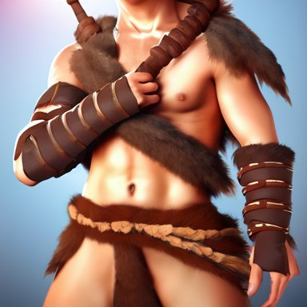
rejected: 0.3192 Preferred − rejected: -0.1262; event imagereward:test:007133-0110. Unverified.
supportive the great grandchildren of superheroes
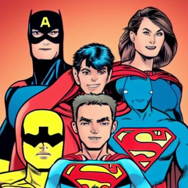
preferred: 0.2080 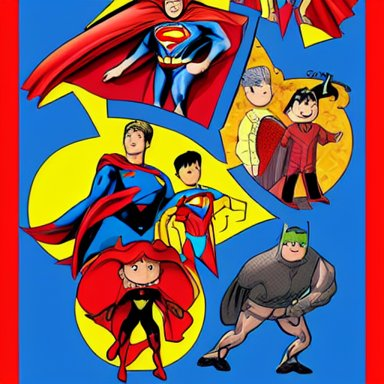
rejected: 0.3162 Preferred − rejected: -0.1082; event imagereward:test:010953-0086. Unverified.
counterexample photo by josh pierce and prateek vatash and roman bratschi, a giant huge beautiful mid - century modern revival mansion palace with green plants and giant reflective windows on a huge scenic cliff overlooking the ocean, 4 d, 4 k, ray tracing reflections, volumetric lighting and shadows, haze, light beams
preferred: 0.2647 rejected: 0.1509 Preferred − rejected: +0.1138; event imagereward:test:007209-0011. Unverified.
counterexample footage of an astronaut in a tropical beach
preferred: 0.2996 rejected: 0.2074
Preferred − rejected: +0.0922; event imagereward:test:001227-0027. Unverified.
random_audit raytraced render and digital painting of the inconceivable and spectacular a scene of complete madness, by greg rutkowski and michelangelo buonarroti and kinkade, cosmic entities, celestial, cosmic, luxury, elegant, ornate, vibrant and vivid, smooth, soft billowing smoke, darkness, bright, heavenly, elegant, swirls, cosmic flower, nebula vines, nebula tree, twirling, billowing, cinematic, unrealistic, high contrast, hdr, 4 k, artstation, cgsociety, unreal engine, symobolism, magical, mystical, mystifying, obscure, perplexing, zbrush, octane, hyperrealistic, bokeh, dof
preferred: 0.1711 rejected: 0.1695
Preferred − rejected: +0.0016; event imagereward:test:008151-0078. Unverified.
random_audit funny peanut butter
preferred: 0.2060 rejected: 0.2493 Preferred − rejected: -0.0433; event imagereward:test:010856-0009. Unverified.
ankle-deep (rejected direction frozen on discovery) supportive !13 hungry cannibals making a rich salad around a marble table, !positioned as last supper cinematic lighting, dramatic framing, highly detalied, 4k, artstation, by Rene Lalique and Wayne Barlowe
preferred: 0.1747 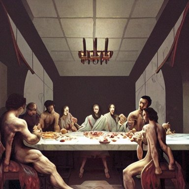
rejected: 0.3004 Preferred − rejected: -0.1257; event imagereward:test:007135-0060. Unverified.
supportive beautiful human witch with blonde short curtly hair in intricate ornate witch robe, haughty evil look, witch hat. in style of yoji shinkawa and hyung - tae kim, trending on artstation, dark fantasy, great composition, concept art, highly detailed, dynamic pose.
preferred: 0.2371 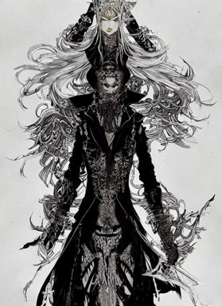
rejected: 0.3309 Preferred − rejected: -0.0938; event imagereward:test:009500-0056. Unverified.
counterexample raytraced render and digital painting of the inconceivable and spectacular a scene of complete madness, by greg rutkowski and michelangelo buonarroti and kinkade, cosmic entities, celestial, cosmic, luxury, elegant, ornate, vibrant and vivid, smooth, soft billowing smoke, darkness, bright, heavenly, elegant, swirls, cosmic flower, nebula vines, nebula tree, twirling, billowing, cinematic, unrealistic, high contrast, hdr, 4 k, artstation, cgsociety, unreal engine, symobolism, magical, mystical, mystifying, obscure, perplexing, zbrush, octane, hyperrealistic, bokeh, dof
preferred: 0.2951 rejected: 0.2203
Preferred − rejected: +0.0748; event imagereward:test:008151-0078. Unverified.
counterexample of an intricate murky seabed with strange cute friendly marine creatures with huge eyes, long tongue, round teeth and funny face appearing from the water, in the style of craola, macro lens, shallow depth of field, highly detailed, digital painting, trending artstation, concept art, illustration, cinematic lighting, vibrant colors, photorealism, epic, octane render
preferred: 0.2689 rejected: 0.2176
Preferred − rejected: +0.0513; event imagereward:test:007233-0075. Unverified.
random_audit guy fieri is very fit, makin peppermint ham patties with bacon in his kitchen
preferred: 0.2247 rejected: 0.2373 Preferred − rejected: -0.0127; event imagereward:test:009614-0104. Unverified.
random_audit retro scifi spaceport with a spaceship about to take off, concept art, hyper detailed, ultra realistic, octane, artstation trending, unreal engine, dramatic lighting, reflections
preferred: 0.2380 rejected: 0.2333 Preferred − rejected: +0.0047; event imagereward:test:007367-0101. Unverified.
footprint (rejected direction frozen on discovery) supportive Boris Johnson and Eminen on a stage having an epic rap battle together
preferred: 0.1925 rejected: 0.2877 Preferred − rejected: -0.0951; event imagereward:test:007713-0046. Unverified.
supportive !13 hungry cannibals making a rich salad around a marble table, !positioned as last supper cinematic lighting, dramatic framing, highly detalied, 4k, artstation, by Rene Lalique and Wayne Barlowe
preferred: 0.1972 rejected: 0.2767 Preferred − rejected: -0.0795; event imagereward:test:007135-0060. Unverified.
counterexample highly detailed painting of uzumaki naruto fighting a looming demigod, dramatic, sense of scale, stephen bliss, unreal engine, greg rutkowski, ilya kuvshinov, ross draws, hyung tae and frank frazetta, tom bagshaw, tom whalen, nicoletta ceccoli, mark ryden, earl norem, global illumination, god rays, windswept
preferred: 0.3266 rejected: 0.2627
Preferred − rejected: +0.0639; event imagereward:test:001382-0041. Unverified.
counterexample movie still of a man and a robot in a moment of horror, movie still, cinematic composition, cinematic light, by edgar wright and david lynch
preferred: 0.3144 rejected: 0.2621 Preferred − rejected: +0.0523; event imagereward:test:007223-0095. Unverified.
random_audit photograph of a ten year old girl by annie leibovitz, red hair, freckles, toothless
preferred: 0.2443 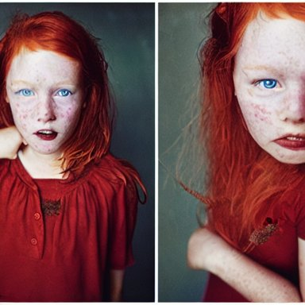
rejected: 0.2428 Preferred − rejected: +0.0015; event imagereward:test:007066-0058. Unverified.
random_audit huge hulking creature, muscular and terrifying, unsettling, creepy, epic hairy monster terrifying covered in dark fur and matted mud with glowing green eyes, concept art, digital character art, artstation, cgsociety
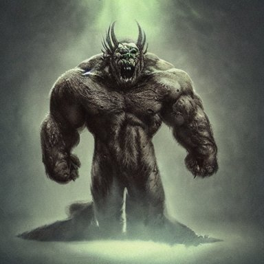
preferred: 0.2906 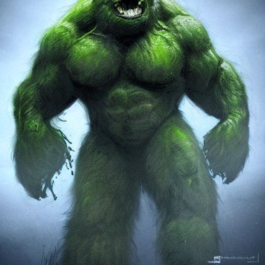
rejected: 0.3002 Preferred − rejected: -0.0096; event imagereward:test:007170-0061. Unverified.
hand-shaped (rejected direction frozen on discovery) supportive retro scifi spaceport with a spaceship about to take off, concept art, hyper detailed, ultra realistic, octane, artstation trending, unreal engine, dramatic lighting, reflections
preferred: 0.2018 rejected: 0.3211 Preferred − rejected: -0.1193; event imagereward:test:007367-0101. Unverified.
supportive photograph of a ten year old girl by annie leibovitz, red hair, freckles, toothless
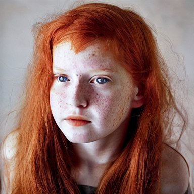
preferred: 0.2086 rejected: 0.3025 Preferred − rejected: -0.0939; event imagereward:test:007066-0058. Unverified.
counterexample promotional vogue studio portrait photo of Alanis Morissette
preferred: 0.2871 rejected: 0.1975 Preferred − rejected: +0.0896; event imagereward:test:008772-0049. Unverified.
counterexample close - up view of silhouettes watching a giant dark sci - fi alien sea creature with big glowing eyes in a giant futuristic fish tank, deep blue colors, highly detailed science fiction painting by syd mead, roger dean, and moebius. rich colors, high contrast, black background. unreal engine, artstation.
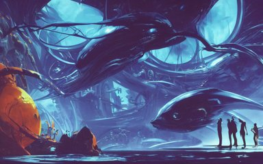
preferred: 0.2767 rejected: 0.1979 Preferred − rejected: +0.0788; event imagereward:test:002127-0162. Unverified.
random_audit mother theresa eating a terrapin
preferred: 0.3147 rejected: 0.2727 Preferred − rejected: +0.0420; event imagereward:test:010817-0088. Unverified.
random_audit film still from frightening horror movie. cinematic. 8 k.
preferred: 0.2415 rejected: 0.2169 Preferred − rejected: +0.0246; event imagereward:test:009475-0037. Unverified.
bullet-shaped (rejected direction frozen on discovery) supportive photo by josh pierce and prateek vatash and roman bratschi, a giant huge beautiful mid - century modern revival mansion palace with green plants and giant reflective windows on a huge scenic cliff overlooking the ocean, 4 d, 4 k, ray tracing reflections, volumetric lighting and shadows, haze, light beams
preferred: 0.1866 rejected: 0.2639 Preferred − rejected: -0.0772; event imagereward:test:007209-0011. Unverified.
supportive funny peanut butter
preferred: 0.2292 rejected: 0.3007 Preferred − rejected: -0.0715; event imagereward:test:010856-0009. Unverified.
counterexample a realistic detailed cinematic painting of a beautiful clear glass vibrant consciousness of human evolution, strange miraculous entity reflecting light prism, spiritual enlightenment, manifestation, peace, reincarnation, memories of past lives, triumph, beauty, perfection, opal statues adorned in jewels, by david a. hardy, kinkade, lisa frank, wpa, public works mural, socialist
preferred: 0.2967 rejected: 0.2386
Preferred − rejected: +0.0581; event imagereward:test:010264-0028. Unverified.
counterexample A majestic landscape featuring a river, mountains and a forest. A small group of birds is flying in the sky. Harsh winter. very windy. There is a man walking in a deep snow. Cinematic, very beautiful, painting in the style of Lord of the rings
preferred: 0.2489 rejected: 0.2086 Preferred − rejected: +0.0402; event imagereward:test:007135-0056. Unverified.
random_audit mountains in the iris, macro photography, high resolution, high detail, 4K, 8K
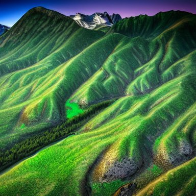
preferred: 0.2494 rejected: 0.2735 Preferred − rejected: -0.0241; event imagereward:test:007106-0064. Unverified.
random_audit bioluminescent crystal ball abstract sculpture, neon, fluorescent, magenta hyper detailed, red & purple beauteous biomechanical organic lightpainting, 8 k scenery, perfect lighting balance,
preferred: 0.2659 rejected: 0.2959 Preferred − rejected: -0.0301; event imagereward:test:008275-0162. Unverified.
trampling (rejected direction frozen on discovery) supportive attractive bradley james as king arthur pendragon, sat in his throne, big arches in the back, very detailed face, by gaston bussiere, j. c. leyendecker
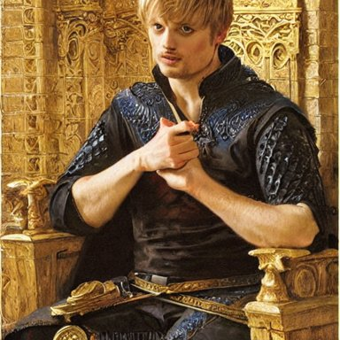
preferred: 0.2180 rejected: 0.3111 Preferred − rejected: -0.0931; event imagereward:test:001333-0052. Unverified.
supportive beautiful human witch with blonde short curtly hair in intricate ornate witch robe, haughty evil look, witch hat. in style of yoji shinkawa and hyung - tae kim, trending on artstation, dark fantasy, great composition, concept art, highly detailed, dynamic pose.
preferred: 0.2111 rejected: 0.3035 Preferred − rejected: -0.0925; event imagereward:test:009500-0056. Unverified.
counterexample rainy dystopian city from the year 3000, futuristic, neon lights, cyberpunk, atmospheric, detailed, unreal engine, octane render,
preferred: 0.2575 rejected: 0.1959
Preferred − rejected: +0.0615; event imagereward:test:001221-0062. Unverified.
counterexample footage of an astronaut in a tropical beach
preferred: 0.2911 rejected: 0.2303
Preferred − rejected: +0.0608; event imagereward:test:001227-0027. Unverified.
random_audit cinematic movie scene, beautiful Product shot film still of a Syd Mead futuristic modern sleek automobile speeding down a wet street at night in cyperpunk city, motion, hard surface modeling, volumetric soft lighting, style of Stanley Kubrick cinematography, 8k H 768
preferred: 0.1981 rejected: 0.2070 Preferred − rejected: -0.0089; event imagereward:test:011041-0080. Unverified.
random_audit astronaut drifting afloat in space, in the darkness away from anyone else, alone, digital render, detailed illustration, black background dotted with stars, concept art, realistic, 8 k
preferred: 0.2515 rejected: 0.2412 Preferred − rejected: +0.0103; event imagereward:test:007019-0095. Unverified.
snowfield (rejected direction frozen on discovery) supportive a portrait of a red - skinned dragonborn monk in a plain white cloak white cloak, holding a spear with a black tip, fantasy art by greg rutkowski
preferred: 0.2354 rejected: 0.3500
Preferred − rejected: -0.1146; event imagereward:test:008328-0024. Unverified.
supportive a half - masked rugged laboratory engineer man with cybernetic enhancements as seen from a distance, scifi character portrait by greg rutkowski, esuthio, craig mullins, 1 / 4 headshot, cinematic lighting, dystopian scifi gear, gloomy, profile picture, mechanical, half robot, implants, dieselpunk
preferred: 0.1859 rejected: 0.2855 Preferred − rejected: -0.0996; event imagereward:test:001383-0079. Unverified.
counterexample a half - masked rugged laboratory engineer man with cybernetic enhancements as seen from a distance, scifi character portrait by greg rutkowski, esuthio, craig mullins, 1 / 4 headshot, cinematic lighting, dystopian scifi gear, gloomy, profile picture, mechanical, half robot, implants, dieselpunk
preferred: 0.2642 rejected: 0.1907 Preferred − rejected: +0.0735; event imagereward:test:001383-0079. Unverified.
counterexample huge hulking creature, muscular and terrifying, unsettling, creepy, epic hairy monster terrifying covered in dark fur and matted mud with glowing green eyes, concept art, digital character art, artstation, cgsociety
preferred: 0.2894 rejected: 0.2186
Preferred − rejected: +0.0709; event imagereward:test:007170-0061. Unverified.
random_audit obi - wan kenobi | | fine detail!! anime!! realistic shaded lighting!! poster by ilya kuvshinov katsuhiro otomo ghost - in - the - shell, magali villeneuve, artgerm, jeremy lipkin and michael garmash and rob rey
preferred: 0.1868 rejected: 0.1981
Preferred − rejected: -0.0113; event imagereward:test:008275-0222. Unverified.
random_audit photo of a guy playing a gameboy under the blanket in his bed at night
preferred: 0.2070 rejected: 0.2134 Preferred − rejected: -0.0065; event imagereward:test:001242-0093. Unverified.
floor (rejected direction frozen on discovery) supportive bioluminescent crystal ball abstract sculpture, neon, fluorescent, magenta hyper detailed, red & purple beauteous biomechanical organic lightpainting, 8 k scenery, perfect lighting balance,
preferred: 0.2305 rejected: 0.3484 Preferred − rejected: -0.1179; event imagereward:test:008275-0162. Unverified.
supportive mountains in the iris, macro photography, high resolution, high detail, 4K, 8K
preferred: 0.1976 rejected: 0.3113
Preferred − rejected: -0.1137; event imagereward:test:007106-0064. Unverified.
counterexample photo by josh pierce and prateek vatash and roman bratschi, a giant huge beautiful mid - century modern revival mansion palace with green plants and giant reflective windows on a huge scenic cliff overlooking the ocean, 4 d, 4 k, ray tracing reflections, volumetric lighting and shadows, haze, light beams
preferred: 0.2908 rejected: 0.2148 Preferred − rejected: +0.0761; event imagereward:test:007209-0011. Unverified.
counterexample close - up view of silhouettes watching a giant dark sci - fi alien sea creature with big glowing eyes in a giant futuristic fish tank, deep blue colors, highly detailed science fiction painting by syd mead, roger dean, and moebius. rich colors, high contrast, black background. unreal engine, artstation.
preferred: 0.2974 rejected: 0.2228 Preferred − rejected: +0.0747; event imagereward:test:002127-0162. Unverified.
random_audit highly detailed painting of uzumaki naruto fighting a looming demigod, dramatic, sense of scale, stephen bliss, unreal engine, greg rutkowski, ilya kuvshinov, ross draws, hyung tae and frank frazetta, tom bagshaw, tom whalen, nicoletta ceccoli, mark ryden, earl norem, global illumination, god rays, windswept
preferred: 0.1852 rejected: 0.2769
Preferred − rejected: -0.0917; event imagereward:test:001382-0041. Unverified.
random_audit handsome gaunt man with receding hair, in a smoking jacket, holding a pipe, warm colors, hard angles, painting by gaston bussiere, craig mullins, j. c. leyendecker
preferred: 0.2292 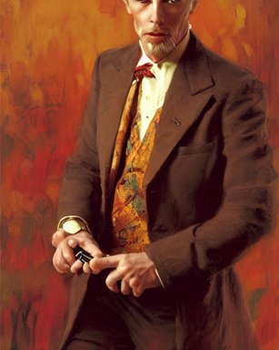
rejected: 0.2208 Preferred − rejected: +0.0083; event imagereward:test:001376-0050. Unverified.
fibular (rejected direction frozen on discovery) supportive !13 hungry cannibals making a rich salad around a marble table, !positioned as last supper cinematic lighting, dramatic framing, highly detalied, 4k, artstation, by Rene Lalique and Wayne Barlowe
preferred: 0.1867 rejected: 0.3016 Preferred − rejected: -0.1149; event imagereward:test:007135-0060. Unverified.
supportive portrait of a red color wolf with yellow horns in a suit, D&D, fantasy, elegant, badass, highly detailed, slim, digital painting, artstation, concept art, sharp focus, illustration
preferred: 0.1861 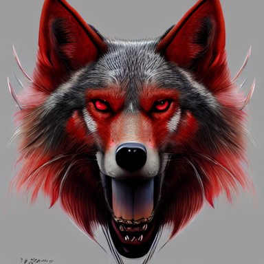
rejected: 0.2550 Preferred − rejected: -0.0688; event imagereward:test:009582-0143. Unverified.
counterexample raytraced render and digital painting of the inconceivable and spectacular a scene of complete madness, by greg rutkowski and michelangelo buonarroti and kinkade, cosmic entities, celestial, cosmic, luxury, elegant, ornate, vibrant and vivid, smooth, soft billowing smoke, darkness, bright, heavenly, elegant, swirls, cosmic flower, nebula vines, nebula tree, twirling, billowing, cinematic, unrealistic, high contrast, hdr, 4 k, artstation, cgsociety, unreal engine, symobolism, magical, mystical, mystifying, obscure, perplexing, zbrush, octane, hyperrealistic, bokeh, dof
preferred: 0.2929 rejected: 0.2198
Preferred − rejected: +0.0731; event imagereward:test:008151-0078. Unverified.
counterexample retro sci fi art of an astronaut next to jupiter in a car,
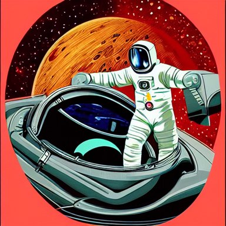
preferred: 0.2673 rejected: 0.2092 Preferred − rejected: +0.0580; event imagereward:test:010361-0095. Unverified.
random_audit photo of a hybrid between a lion and a horse
preferred: 0.2683 rejected: 0.2194
Preferred − rejected: +0.0489; event imagereward:test:008293-0137. Unverified.
random_audit Horrifying creature, haunted, horror
preferred: 0.2990 rejected: 0.2876 Preferred − rejected: +0.0114; event imagereward:test:009006-0102. Unverified.